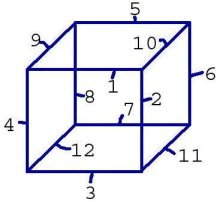

Computer Graphics
Østfold University College
Østfold University College

While we in theory want control over every point that is rendered, this is not possible in practice, no matter how much machine power we have access to. If we want to model a given formula (for example x2 + y2 + z2 = r), we will in practice have to choose a resolution for what we want to show (since we can't render infinite small point in realistic time). One of the ways to do this is with ray tracing where you find what color every pixel in the resulting picture correspond to. This is for the time being so demanding that we can't make good real time visualization. By using Marching Cubes we can render triangles that makes a good approximation to the model in real time.
To understand why a method like this is
necessary, we'll have a closer look at what I mentioned earlier in the
module. Many times we want to model a figure that we don't know the
shape of in advance (That is, we don't know which triangles it is going
to consist of). When we get away from the concept that requires that we
know the triangles the figure is made up of in advance, we can generate
dynamical figures that can be modified and modeled with simple
mathematical formulas. The only requirement we have for what we are
going to model, is that we can decide whether a point (x,y,z) is inside
or outside the figure. With this information we can build a model that
is close to what we want to model. We can change the accuracy by
adjusting the algorithm to the purpose of the application - that is an
application that is dependant of running in real time could use a low
resolution, while an application that renders a still image or similar
could use a high resolution and generate a far more detailed picture.
As with almost all principles for 3d graphics, Marching Cubes is
best explained if we study the same phenomenon in 2d first. We will now
study Marching Squares and not Marching Cubes, but the principle is the
same. The principle is that we make a grid of points. For each of these
points we decide whether the point is inside or outside the object we
want to model. For squares that have all of their points inside or
outside the figure we do nothing (at least in 3d space). To illustrate
this we can study the result from a possible implementation of Marching
Squares.
The red ellipsis state the form we wish to achieve, while the green line show the result from a run through of the Marching Squares. The points in the grid are where the horizontal and the vertical lines meet.
The pseudo code for the algorithm can be outlined like this:
1.For every point in the grid
1.1 set the point's status to inside or outside the ellipsis
(from the formula for an ellipsis)
2.For every square in the grid
2.1. For every line segment that has a point outside
and a point inside the figure
2.1.1. Add a point in the list t placed
in the middle between the two points
3. Draw sequential lines between the points
found in the list t.
This was a quick look into how this can be done in 2d. We will now
look at cubes (which have 8 corners) in contrast to the squares we
looked at with Marching Squares. This will add a third dimension that
is directed "inwards" in the screen. We now have a grid that forms a
grid system in three dimensions, almost like a Lego plate full of
identical, square blocks, for example 10x10x10. This leads us to what
makes our algorithm flexible; if we want to increase the accuracy of
the model we generate, we simply decrease the size of our cubes, but
increase the number of them. This means that we have to process more
points, but it gives us a better result. In the precompiled code I
operate with a grid that is 28x28x28, which means that each frame has
to process 21952 points. If we increase accuracy to 40x40x40 (which
seems like a small increase) we have to process 64000 points. After
some testing I found that 28x28x28 gave a satisfactory resolution and
still ran quite nicely on an "ok" computer for 3d applications today.
Let's look a bit more on the method to get Marching Squares over in
three dimensions.
|  |
The images show one cube in the grid. As explained earlier a grid
consists of a variable number of cubes, in our case the magical number
21952. Since a cube has 8 points and each of these points can have two
different types of status (inside or outside) we get 2^8 = 256
different combinations of points that's on the inside our outside of
the model for a given cube. If all of the points are on the inside, the
cube will be absorbed by the frames around the model, so then we aren't
interested in drawing anything at all. If all the points are on the
outside we are in the same situation, only the opposite - the cube
doesn't contribute to the model anyway. For each of these combinations
we have a set of triangles that can be generated. As we outlined in
Marching Squares we found a point that was in the middle of the line
between the point on the outside and the point on the inside; in 3d a
missing point will lead to that 3 lines intersect. This necessarily
gives us three points - just enough to build a triangle. Of the 256
different combinations 2 will not give a drawing, 8 will result in a
triangle placed in every corner of the cube.. and so on. For a more
detailed explanation I recommend the links that I have listed as source
material.
A quick sequence of images that should illustrate how the triangles are generated from every cube:
| Our usual cube. | |
| We have one point on the outside of the model we want to draw, the remaining seven are on the inside: | |
| We have generated a triangle that is formed between the centers on all three lines that now have one point on the inside and one on the outside of the model. | |
| We have another point in the same cube that is outside the model (in the code this is decided before we draw the triangles, but it is easier to illustrate it bit by bit). | |
| We generate another triangle, this time on the other side of the cube. As we can se, this single cube has contributed with two triangles for the finished model. When we run through all ~21.000 cubes, we get a model quite close to what we want. | |
|
The grid and some of the triangles that is generated when running the application is visible here:
|
|
And now, to the part that actually makes things happen, the code:
Technically the 'problem' with the 256 different combinations of missing points solved in the following way: There is a lookup table that contains 256 entries. This table contains an overview over which of the 12 line segments we shall interpolate if this combination occurs.
const int mcubes::edgeTable[256] = {
0x0 , 0x109, 0x203, 0x30a, 0x406, 0x50f, 0x605, 0x70c,
....
}
We see that if we look up 0 in the lookup table (none on the inside), it will return '0'. It is the same for 255 (which corresponds to 1111 1111). When we know which of the 12 line segments that shall interpolate, we calculate points on these line segments, which we then store in an internal 12-elements array. Every line segment has a fixed point in this array. To discover _which_ of these points we are interested in (of the 12), we have another table that states which points we should make triangles between to draw the desired triangle. A segment of this table follows:
const int mcubes::triTable[256][16] = {
{-1, -1, -1, -1, -1, -1, -1, -1, -1, -1, -1, -1, -1, -1, -1, -1},
{0, 8, 3, -1, -1, -1, -1, -1, -1, -1, -1, -1, -1, -1, -1, -1},
...
};
Entry #0 tells us that we're not getting any triangles if we have 0
in lookup value. Entry #1 states that if we have '1' as a lookup value
(corner 1 is missing), we are going to draw a triangle between the
points 0, 8 and 3 from our 12 elements big static array. As a result of
the treatment we do when we control edgeTable, we have updated these
three points to be interpolated points between the endpoints on a
single line. In practice (as we'll see later) we loop over every point
in the table (up to 15) until we come across -1. Then groups of three
of these points construct a triangle.
This code example is almost self-explanatory. This is how it is settled if a point is going to be included in the final result or not. We have defined a border value (metaballs_iso_value) that states whether the points are on the inside or the outside. If the calculation for a point leads to a value below this iso value, the point is presumed to be outside the model. The points that have a value above the iso value, is on the inside.
if (this->vertices[idx].flux > this->metaballs_iso_value)
{
this->vertices[idx].inside = true;
}
else
{
this->vertices[idx].inside = false;
}
The following code describes how the index in the lookup table is calculated. It takes a cube in our grid as a starting point, and checks the eight corners to check if it's inside or outside the model. If all eight are on the inside we will get 255 as a lookup value - and if all the points are on the outside we will get 0. In these two cases we have 0x0 has an entry in edgeTable, this tells us that we don't want to interpolate any of our edges. All other combinations will generate a set with interpolations of edges and (further down) one or more triangles. This is a small segment of the routine (which will have 8 if statements, not only two).
if (this->vertices[idx].inside) lookup |= 128; if (this->vertices[idx+1].inside) lookup |= 64;
The code below is a segment showing how interpolation of the different line segments is done. The value we got from the table we found the lookup value for in the code above, is AND'ed with values that correspond to 2^0 -> 2^11. This results in every one of the twelve line segments that is inside a cube. Then we place a point in the 12 point array discussed earlier, already interpolated in our interpolation routines.
if (this->edgeTable[lookup] & 1)
this->verts[0] = this->mb->interpolate(
this->vertices[idx + this->size_y +
(this->size_y * this->size_z)],
this->vertices[idx + 1 + this->size_y +
(this->size_y * this->size_z)]
}
The code presented here does the calculation. We construct a for-loop that runs through the entries made for a specific lookup part of triTable. As I showed earlier, these values can for example be of 0,8,3. This means that we want to see the points we have interpolated in our 12 elements array on element 0, 8 and 3. These construct a triangle. I have chosen to have two loops in this code section, one that loops from triangle to triangle and one that runs through the different points in the triangle, the reason for this is to give the possibility to render the whole figure in wire frame if this is desired. This point assumes that we are capable of drawing single line loops on three points each, which makes us unable to use a fixed loop that only takes three points at a time (as done with the ordinary GL_TRIANGLES used here). Notice that we loop through the values in triTable until an element is -1, which means that we don't have any triangles left to draw. We also state the normal for each of the interpolated points, to make the lighting work as desired.
for (i = 0; this->triTable[lookup][i] != -1; i+=3)
{
glBegin(GL_TRIANGLES);
{
for (j = i; j < (i+3); j++)
{
glNormal3f(
(float) this->verts[this->triTable[lookup][j]].normal_x,
(float) this->verts[this->triTable[lookup][j]].normal_y,
(float) this->verts[this->triTable[lookup][j]].normal_z
);
glVertex3f(
(float) this->verts[this->triTable[lookup][j]].x_pos,
(float) this->verts[this->triTable[lookup][j]].y_pos,
(float) this->verts[this->triTable[lookup][j]].z_pos
);
}
}
glEnd();
}
Since we now have had a look at the part of the code that does the
drawing and logic behind the "parsing" of the different cube
combinations, I will also have a quick look at the two routines that
makes it work in practice. The first routine is a simple interpolation
routine, defined as 'inline' in c++ since it is run one time for every
point in the grid (as mentioned this is about 21.000 points in the
precompiled version). In practice this makes the compiler set the code
directly in, instead of giving us a function call with the slow speed
this brings (as a stack (don't think it is included in inline
statements) and parsing of parameters).
The calculation of the interpolated points should not require any more explanation; we calculate a weight in proportion to the two points and how the decisive point shall interpolate in accordance to them. This is done in accordance to the parameter 'flux' that states how much a point is affected of our different metapoints / force points. The calculations for this is done in the routine described a segment further down.
inline vertex interpolate(vertex v1, vertex v2)
{
vertex v;
double diff;
diff = (this->iso_value - v1.flux) / (v2.flux - v1.flux);
/* finds where on the line segment the point is */
v.x_pos = v1.x_pos + (v2.x_pos - v1.x_pos) * diff;
v.y_pos = v1.y_pos + (v2.y_pos - v1.y_pos) * diff;
v.z_pos = v1.z_pos + (v2.z_pos - v1.z_pos) * diff;
v.flux = (v1.flux + v2.flux) * 0.5;
/* calculate an average value from
the normals on the single points */
v.normal_x = v1.normal_x + (v2.normal_x - v1.normal_x) * diff;
v.normal_y = v1.normal_y + (v2.normal_y - v1.normal_y) * diff;
v.normal_z = v1.normal_z + (v2.normal_z - v1.normal_z) * diff;
return v;
}
This is the code that calculates how the metapoints / force points affect every element we wish to watch in the grid. First we initialize the flux value for this point to 0, before we run through a quick loop for each of the metapoints to see how much the current point is affected. In practice I do this by calculating an ordinary vector length between the grid point and the metapoint. The formula I chose to use is (force^2 / (x_length^2 + y_length^2 + z_length^2), which gives us a function that decrease gradually as the distance increase. The first force value is pushed into a fabs, to make it possible to have a negative effect from a meta point. I have no code that illustrate this in practice, but it shouldn't be worse than some simple small modifications to be able to have a given point that affects the whole grid in a negative direction. There are several good, pretty examples on how to do this (see thermo plastique of inf, available from http://www.pouet.net/prod.php?which=5558). This is one of many possible extensions that can be suggested as a project during another run-through of this course.
inline double get_vertex_value(vertex v)
{
double flux = 0.0;
for (i = 0; i < num_metapoints; i++)
{
/* calculate the distance to this point
from the given metapoint */
length_x = metapoints[i].x_pos - v.x_pos;
length_y = metapoints[i].y_pos - v.y_pos;
length_z = metapoints[i].z_pos - v.z_pos;
/* calculate the strength that affects this point */
flux += fabs(metapoints[i].power) * metapoints[i].power / (
length_x * length_x +
length_y * length_y +
length_z * length_z + 1);
}
return flux;
}
There is also some comments in the code (but it is not "over commentated" so a certain understanding of C/C++ is necessary.